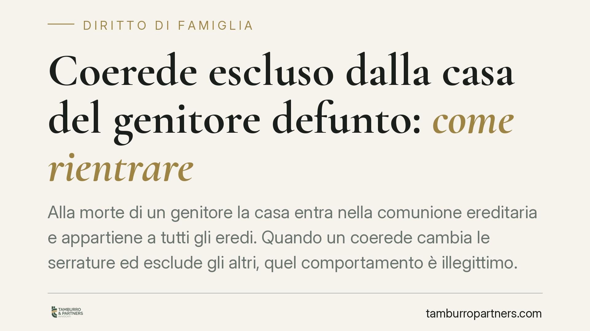

Coerede escluso dalla casa del genitore defunto: come rientrare
Alla morte di un genitore la casa entra nella comunione ereditaria e appartiene a tutti gli eredi. Quando un coerede cambia le serrature ed esclude gli altri, quel comportamento è illegittimo. L'ordinamento offre più strumenti per riottenere l'accesso: reintegrazione nel possesso, petizione ereditaria e ricorsi cautelari. Vediamo come funzionano e quando conviene attivarli.

Il fatto: serrature cambiate e coeredi fuori dalla porta
È una situazione più comune di quanto sembri. Un genitore muore, la casa di famiglia resta vuota e uno dei figli decide di prenderne il controllo esclusivo: cambia la serratura, non consegna le chiavi agli altri fratelli e li tiene fuori.
Quel gesto, per quanto motivato da ragioni pratiche o emotive, non ha fondamento giuridico. Alla morte del proprietario, l'immobile non diventa di chi lo occupa per primo: entra nella cosiddetta comunione ereditaria, cioè appartiene contemporaneamente a tutti gli eredi in proporzione alle rispettive quote.
Inquadramento normativo
Con l'apertura della successione, ciascun erede subentra nel possesso dei beni del defunto senza bisogno di alcuna presa materiale. Lo prevede l'art. 1146 del codice civile, che disciplina la cosiddetta *successio possessionis*: l'erede continua il possesso del suo dante causa dal momento stesso del decesso. In altre parole, si è già "nel possesso" della casa anche senza averci mai messo piede dopo la morte del genitore.
Da qui discende la tutela concreta. L'art. 1168 c.c. disciplina l'azione di reintegrazione (o spoglio): chi viene privato in modo violento o clandestino del possesso di un bene può chiedere al giudice di essere reintegrato entro un anno dallo spoglio. Il cambio delle serrature senza consenso degli altri coeredi rientra pienamente in questa fattispecie, come confermato da una consolidata giurisprudenza di merito e di legittimità.
Accanto a questo strumento c'è la petizione ereditaria dell'art. 533 c.c.: l'erede può agire contro chiunque possieda i beni ereditari a titolo di erede o senza titolo, per ottenerne il riconoscimento della qualità di erede e la restituzione dei beni. È l'azione più ampia, che tutela la posizione ereditaria in sé, e non è soggetta ai termini stretti della reintegrazione.
Implicazioni pratiche per il coerede escluso
La prima conseguenza è che il coerede tenuto fuori non ha perso alcun diritto: resta comproprietario e compossessore dell'immobile. L'esclusione è un fatto illegittimo, non un dato acquisito.
La seconda: la scelta dello strumento dipende dal tempo trascorso e dall'obiettivo. La reintegrazione è rapida e mira a ripristinare subito lo stato di fatto, ma va esercitata entro un anno dallo spoglio. Superato quel termine, o quando la contestazione riguarda la stessa qualità di erede, la strada corretta è la petizione ereditaria.
La terza: nessuno dei coeredi può usare la casa in modo esclusivo escludendo gli altri. Ciascuno può servirsene, purché non impedisca agli altri lo stesso uso (art. 1102 c.c.). Chi occupa l'immobile in via esclusiva può inoltre essere tenuto a corrispondere agli altri un'indennità di occupazione.
Attenzione, però: la reazione non può essere "fai da te". Forzare la serratura o rientrare con la forza espone a responsabilità civile e, in alcuni casi, penale. La via corretta è quella giudiziale.
Cosa fare in concreto
- Documentate l'esclusione. Raccogliete prove del cambio serratura e del rifiuto di consegna delle chiavi: messaggi, testimoni, eventuale accesso negato verbalizzato.
- Inviate una diffida scritta al coerede, con richiesta di consegna delle chiavi e di ripristino dell'accesso, fissando un termine. Serve anche a datare lo spoglio.
- Verificate i termini. Se lo spoglio risale a meno di un anno, valutate l'azione di reintegrazione ex art. 1168 c.c.; oltre quel termine, orientatevi sulla petizione ereditaria.
- Non rientrate con la forza. Evitate azioni autonome sulla serratura: rischiate di trasformarvi da parte lesa a soggetto responsabile.
- Consigliamo di rivolgervi a un legale prima di agire, per scegliere lo strumento adatto e, se possibile, tentare una soluzione stragiudiziale che eviti un contenzioso lungo tra fratelli.
Una precisazione sulla divisione
Ripristinare l'accesso non risolve il problema di fondo: finché dura la comunione, i conflitti sull'uso possono ripresentarsi. Se il rapporto tra coeredi è compromesso, può essere opportuno avviare la divisione ereditaria, che assegna a ciascuno una porzione o liquida le quote. È spesso la strada che chiude la contesa alla radice.
Contributo informativo a cura di Tamburro & Partners - Avv. Giuseppe Tamburro. Non costituisce parere legale.
Ogni famiglia ha il suo equilibrio.
Separazione, divorzio, affidamento, assegno: se vuoi un confronto riservato su una specifica situazione, scrivi allo studio. Ti rispondiamo entro un giorno lavorativo.